위도상으로 중위도에 속하며 우리나라에서 바다에 접하지 않은 유일한 내륙도 입니다. 때문에 여름은 고온다습하고 겨울은 한랭건조한 온대온순 기후로서 계절의 변화가 뚜렷하고 농산물이 풍부하고 품종이 다양합니다. 경제,교육,문화가 크게 발달하여 살기좋은 지역입니다.
Food
카페산
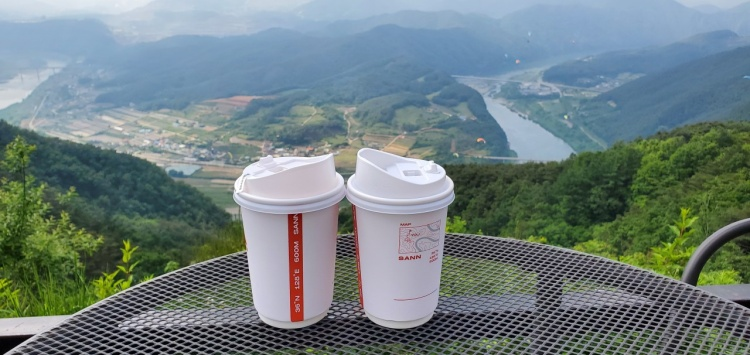 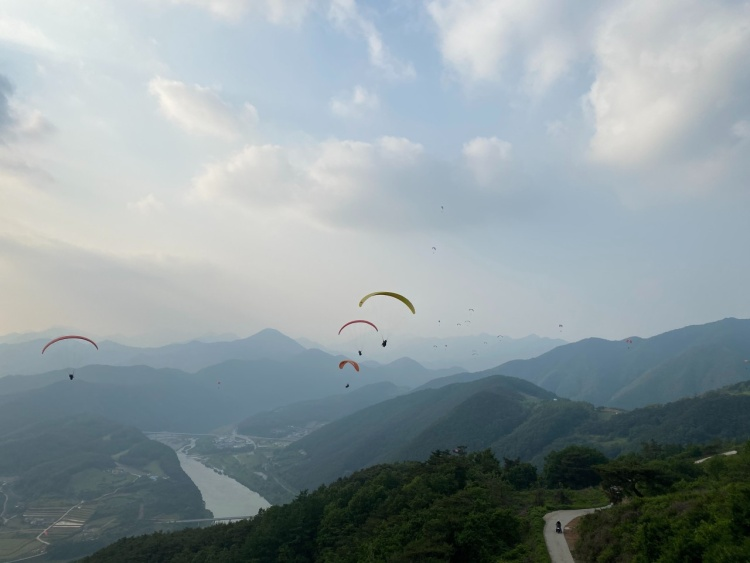⭐️⭐️⭐️⭐️⭐️
충청북도 단양군 가곡면에 위치한 전망좋은 카페 입니다.
아름다운 인테리어와 맛있는 커피가 있는 카페산으로 오세요. 눈앞에서 사람들이 패러글라이딩을 즐기는 모습을 볼수있고 특별한 추억을 만들수도있습니다.
영업시간
평일 09:30 - 19:30
토요일 08:30 - 19:30
입이즐거운그만두
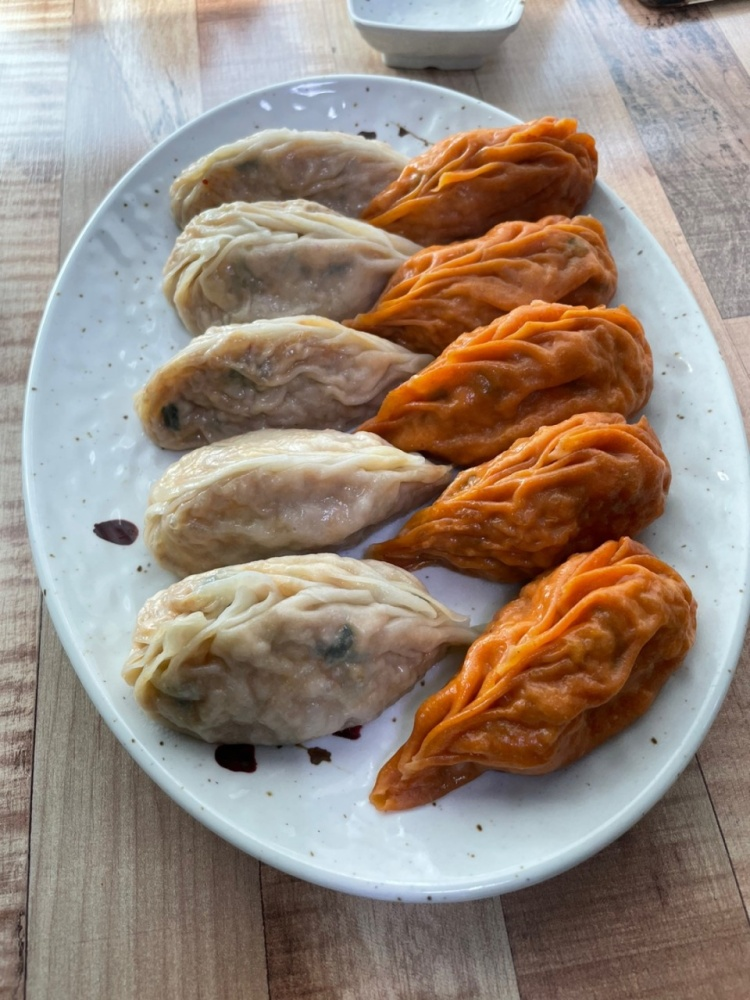 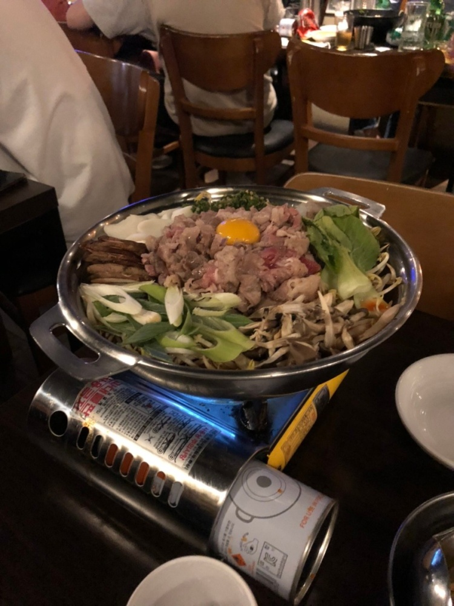⭐️⭐️⭐️⭐️⭐️
맛집프로에 소개된 만두전문 분식점 입니다. 매운걸 좋아한다면 청냥고추가 들어간 미친만두를 먹어보세요. 입이 화끈거립니다. 튀김만두도 인기가 있고 주문배달도 가능합니다.
View
수암골
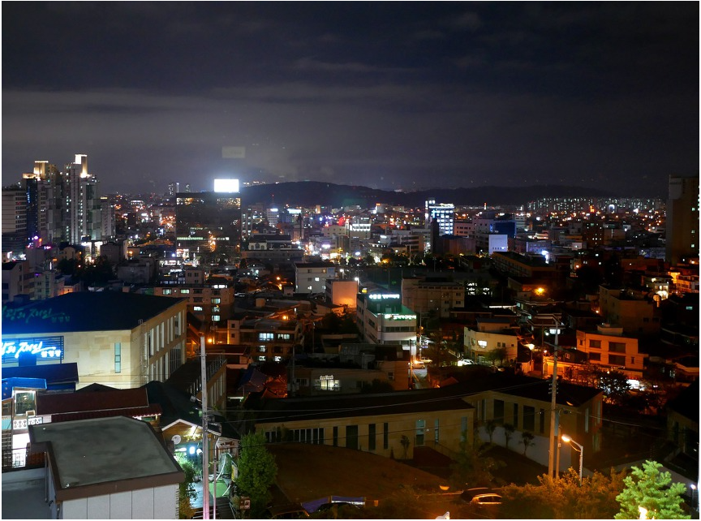 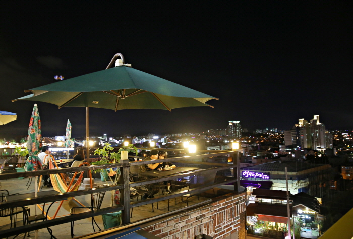⭐️⭐️⭐️⭐️⭐️
충청북도 청주시 상당구에 위치한 수암골 입니다.
청주를 한눈에 볼수있는 수암골 입니다. 대표적으로 제빵왕김탁구를 촬영했던 장소 이고 야간에 방문한다면 아름다운 풍경을 볼수있습니다. 또한 벽화가 있어 재밌는 사진을 촬영할수 있습니다.
경사가 높아 운동화를 신고 올라가는것을 추천합니다! 내려올때 조심히 내려오세요.
청풍문화재단지
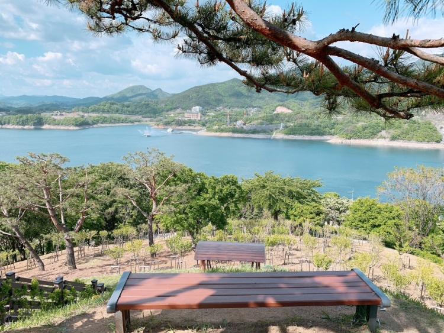 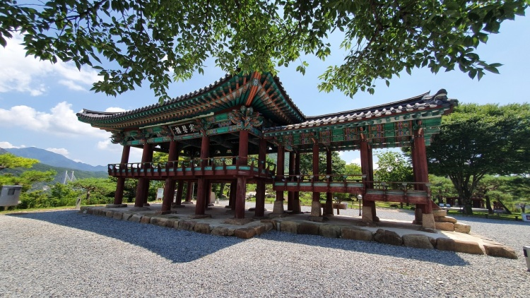⭐️⭐️⭐️⭐️
청풍문화재단지은 충북제천 청풍면에 위치하였습니다.
충청북도청에서 1983년부터 3년간 수몰 지역의 문화재를 원형대로 현재위치에 이전,복원해 단지를 조정하였습니다.
한복을 입고가시면 어울릴만한 배경이 많아서 더욱 다양한 사진을 촬영하실수있습니다!
Landmark
청남대
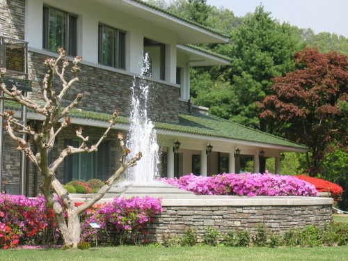 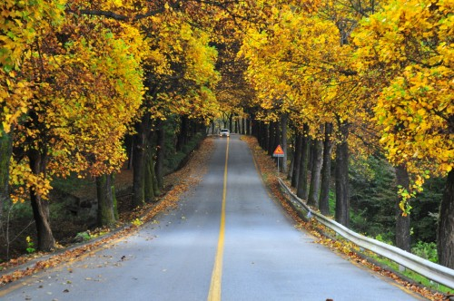⭐️⭐️⭐️⭐️
충청북도 청주시 상당구에 위치한 청남대 입니다.
대통령 전용 별장으로 남쪽에 있는 청와대라는 의미를 가지고 있습니다. 김해를 비롯해 4군데 있었으며 김영남 대통령 시절 모두 폐쇄하고 청남대 한곳만 남아있습니다.
개인/어른 5,000원
개인/청소년, 군경 4,000원
개인/어린이, 노인 3,000원
단양다누리아쿠아리움
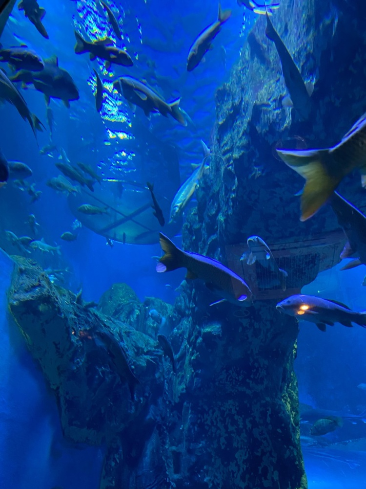 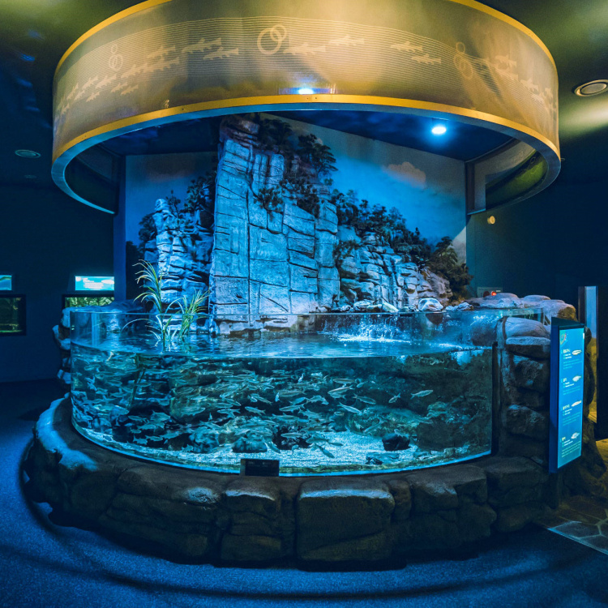⭐️⭐️⭐️⭐️⭐
충북 단양군 단양읍에 위치한 단양다누리 아쿠아리움 입니다.
대규모의 민물고기 생태관을 볼수있습니다! 높이가 8미터에 달하는 대형수족관을 볼수있고 국내외 다양한 민물고기를 만나볼수있습니다.
개인 10,000원
청소년 7,000원
어린이, 노인 6,000원